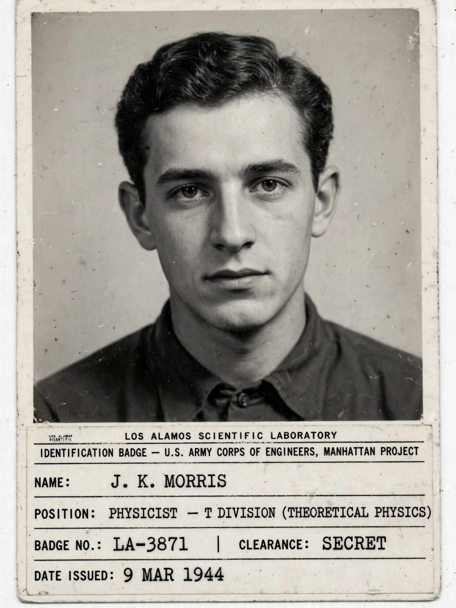

Otto Robert Frisch FRS (1 October 1904 – 22 September 1979) was an Austrian-born British physicist who worked on nuclear physics. With Lise Meitner he advanced the first theoretical explanation of nuclear fission (and first coined the term) in 1939, and with his collaborator Rudolf Peierls he designed the first theoretical mechanism for the detonation of an atomic bomb in 1940, set out in the Frisch–Peierls memorandum. He later worked at Los Alamos on the Manhattan Project and spent most of his career at the University of Cambridge.
| Otto Robert Frisch | |
|---|---|
 Frisch's Los Alamos ID badge photo, c. 1944. | |
| Born | 1 October 1904, Vienna, Austria-Hungary |
| Died | 22 September 1979 (aged 74), Cambridge, England |
| Known for | Explanation of nuclear fission; Frisch–Peierls memorandum |
| Awards | Fellow of the Royal Society (1948) |
| Relatives | Lise Meitner (aunt) |
Frisch was born in Vienna into a Jewish family; his aunt was the physicist Lise Meitner. He studied physics at the University of Vienna, graduating in 1926, and then worked in Berlin and Hamburg, including with Otto Stern on molecular beams. After the Nazi takeover in 1933 he lost his position in Germany and moved first to London, then to Niels Bohr's institute in Copenhagen, where he specialised in neutron physics.
At Christmas 1938 Frisch visited Meitner, then exiled in Sweden, and together they interpreted the puzzling Berlin results of Otto Hahn and Fritz Strassmann: the uranium nucleus, struck by a neutron, had split into two lighter nuclei. Walking in the snow, they worked out the physics using Bohr's liquid-drop model and Einstein's mass–energy relation, calculating the large energy release. Frisch named the process "fission", borrowing the term from cell division in biology, and experimentally confirmed it in Copenhagen in January 1939. Their paper appeared in Nature in February 1939.
Excluded from radar work at Birmingham as an enemy alien, Frisch and Rudolf Peierls calculated in 1940 that the critical mass of uranium-235 needed for an explosive chain reaction was only on the order of a kilogram — far smaller than previously assumed — making an atomic bomb practicable. Their memorandum helped trigger the British MAUD Committee and, through it, the American Manhattan Project. Frisch became a British subject in 1943, went to Los Alamos, and led the Critical Assemblies group; he devised the "Lady Godiva" assembly and narrowly survived a criticality excursion (the "dragon" experiment) in 1945.
In 1947 Frisch became Jacksonian Professor of Natural Philosophy and head of the Cavendish Laboratory's nuclear physics division at Cambridge, a post he held until 1972. He invented the bubble-chamber-like "sweepnik" scanning device and wrote the popular memoir What Little I Remember (1979). He died in Cambridge in 1979.